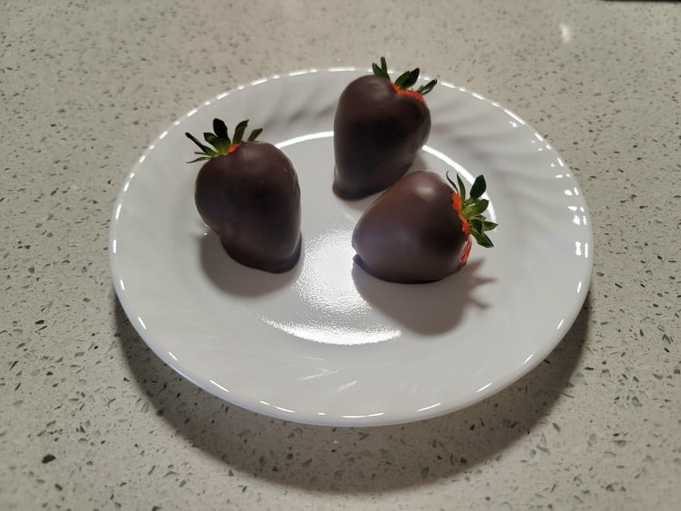

Chocolate Covered Strawberries

Ingredients:
- 10 oz Chocolate
- 2 lb Strawberries
Instructions:
- Wash and completely dry the strawberries. Prepare a baking sheet lined with parchment paper.
- Place the chocolate into a prepared double-boiler. Melt the chocolate while whisking until smooth.
- Holding the strawberries by the stems, dip the strawberries into the chocolate, coating them evenly. Then place carefully onto the baking sheet to cool.
- Place into the fridge for about 15 minutes to chill and for the chocolate to solidify.